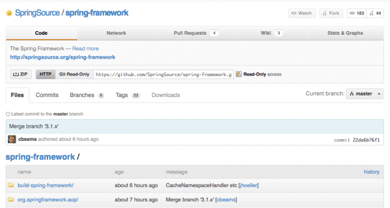

|  |

Noticia interesante para todos los interesados en el desarrollo Java, los proyectos open source, los sistemas de control de versiones o los repositorios de código la que se ha anunciado esta semana: el popular framework para desarrollo Java Spring Framework ha empezado a utilizar Git como sistema de control de versiones y el cada vez más on fire GitHub como repositorio de código. No es el primer producto de la gente de SpringSource.org en migrar a esta solución y por lo que se puede advertir en sus palabras, no será la última.
Es decir, a partir de ahora, la (amplia) comunidad de desarrolladores Spring podrán colaborar con su framework favorito realizando sus peticiones, participando en la wiki, realizando contribuciones o haciendo sus propios forks y siguiendo su propio camino entre otras muchas posibilidades de las que ofrece GitHub.
Hace un tiempo anunciamos que la gente de Eclipse.org también había migrado a GitHub muchos de sus proyectos. ¿Está esta alternativa del mundo de los repositorios de código imponiéndose a los todopoderosos Google Code o SourceForge? ¿Por qué se está produciendo está situación? ¿Se trata de una moda pasajera como los chalecos de terciopelo o ha llegado para quedarse como Maria Teresa Campos? Desde luego muchas cuestiones (algunas retóricas, otras bizarras, las más perfectamente tangibles) son las que nos provoca este anuncio de la mudanza de Spring Framework a Github. En los comentarios, vuestas opiniones, as usual.
Vía | SpringSource.org Blog
En GitHub | Spring Framework
| |